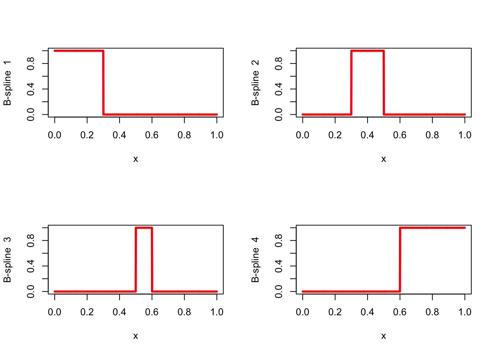
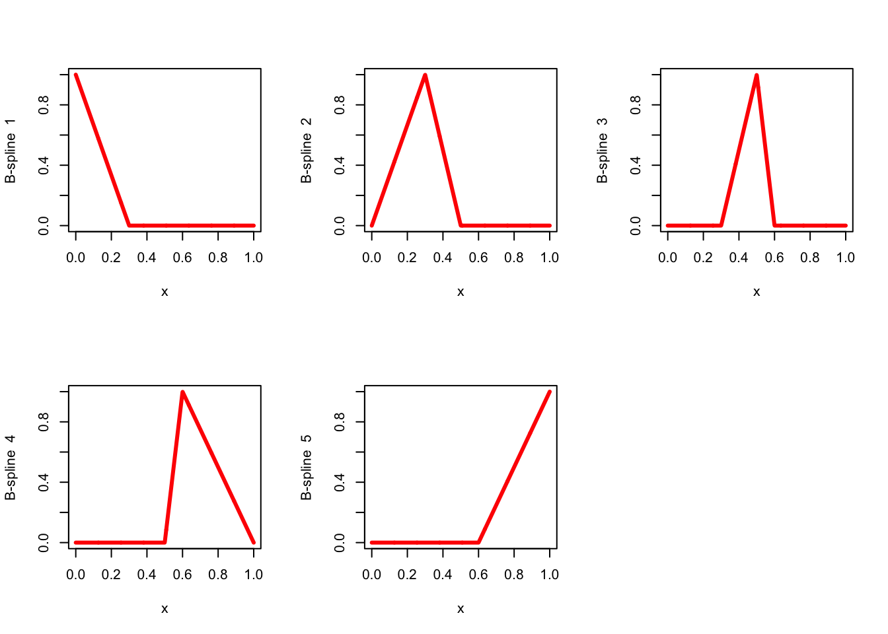
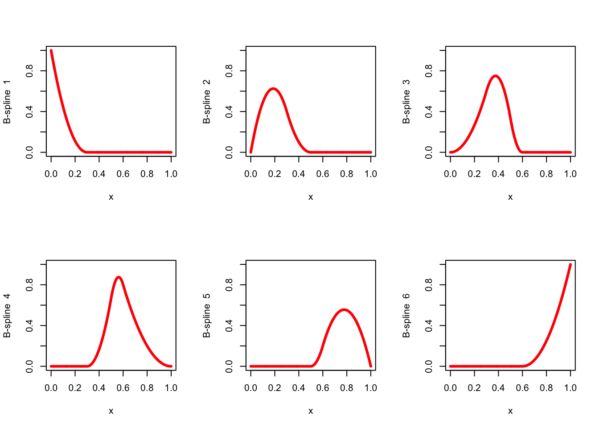
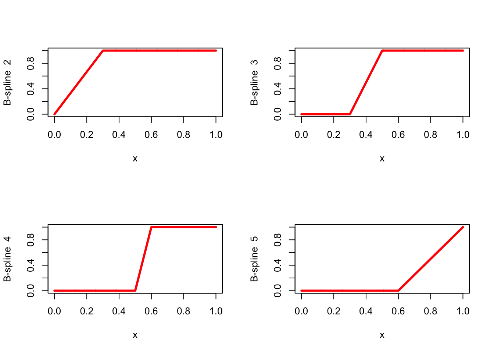
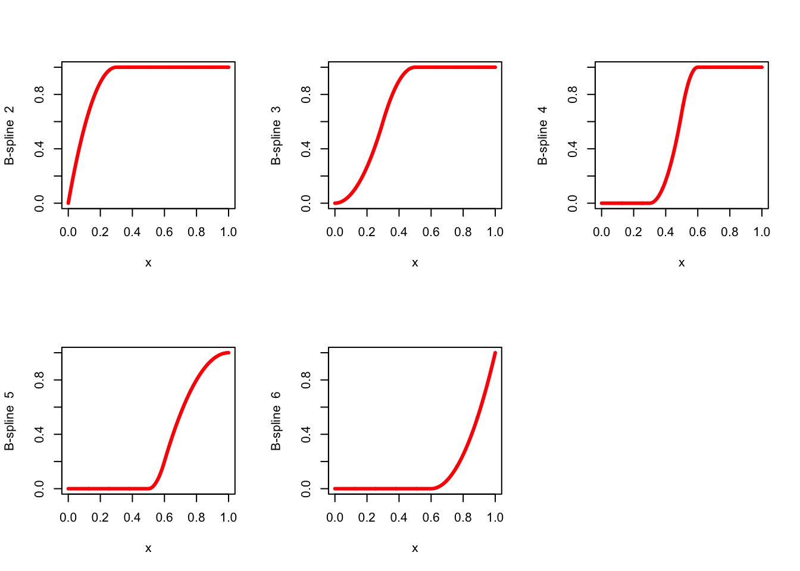
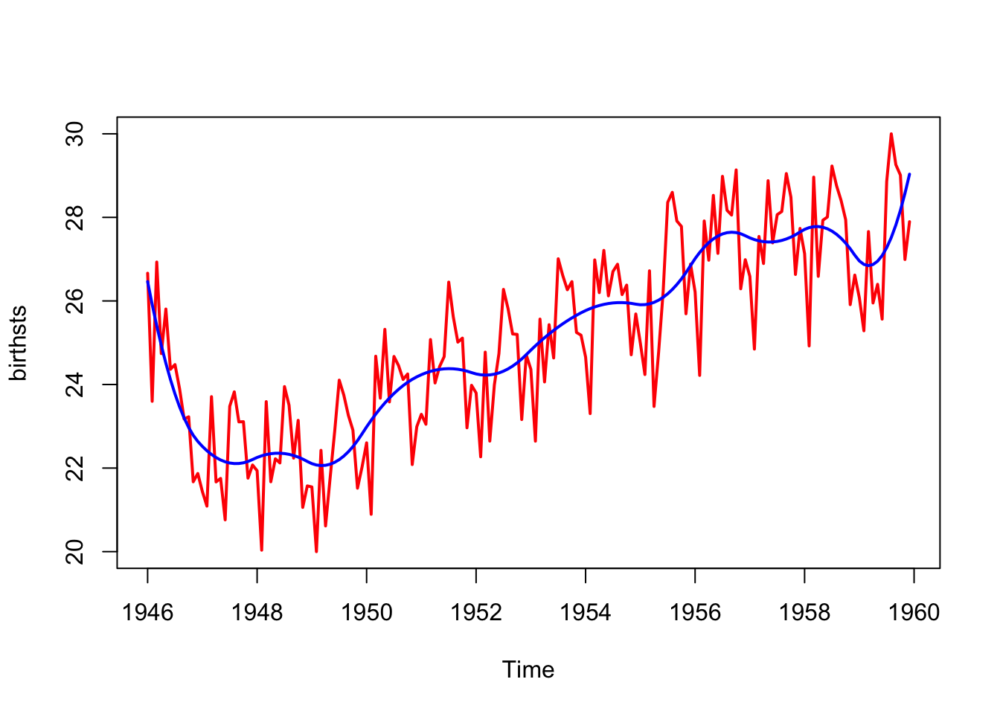
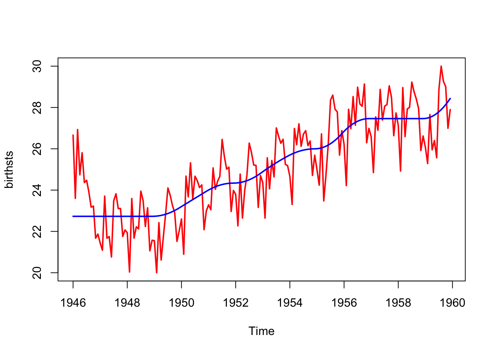

11 Splinical MDS
11.1 Splines
In this section we give a short introduction, with examples, to (univariate) splines, B-splines, and I-splines. It is taken from De Leeuw (2017), with some edits to make it fit into the book. The report it was taken from has more detail and more examples.
To define spline functions we first define a finite sequence of knots \(T=\{t_j\}\) on the real line, with \(t_1\leq\cdots\leq t_p,\) and an order \(m\). In addition each knot \(t_j\) has a multiplicity \(m_j\), the number of knots equal to \(t_j\). We suppose throughout that \(m_j\leq m\) for all \(j\).
A function \(f\) is a spline function of order \(m\) for a knot sequence \(\{t_j\}\) if
- \(f\) is a polynomial \(\pi_j\) of degree at most \(m-1\) on each half-open interval \(I_j=[t_j,t_{j+1})\) for \(j=1,\cdots,p\),
- the polynomial pieces are joined in such a way that \(\mathcal{D}^{(s)}_-f(t_j)=\mathcal{D}^{(s)}_+f(t_j)\) for \(s=0,1,\cdots,m-m_j-1\) and \(j=1,2,\cdots,p\).
Here we use \(\mathcal{D}^{(s)}_-\) and \(\mathcal{D}^{(s)}_+\) for the left and right \(s^{th}\)-derivative operator. If \(m_j=m\) for some \(j\), then the second requirement is empty, if \(m_j=m-1\) then the second requirement means \(\pi_j(t_j)=\pi_{j+1}(t_j)\), i.e. we require continuity of \(f\) at \(t_j\). If \(1\leq m_j<m-1\) then \(f\) must be \(m-m_j-1\) times differentiable, and thus continuously differentiable, at \(t_j\).
In the case of simple knots (with multiplicity one) a spline function of order one is a step function which steps from one level to the next at each knot. A spline of order two is piecewise linear, with the pieces joined at the knots so that the spline function is continuous. Order three means a piecewise quadratic function which is continuously differentiable at the knots. And so on.
11.1.1 B-splines
Alternatively, a spline function of order \(m\) can be defined as a linear combination of B-splines (or basic splines) of order \(m\) on the same knot sequence. A B-spline of order \(m\) is a spline function consisting of at most \(m\) non-zero polynomial pieces. A B-spline \(\mathcal{B}_{j,m}\) is determined by the \(m+1\) knots \(t_j\leq\cdots\leq t_{j+m}\), is zero outside the interval \([t_j,t_{j+m})\), and positive in the interior of that interval. Thus if \(t_j=t_{j+m}\) then \(\mathcal{B}_{j,m}\) is identically zero.
For an arbitrary finite knot sequence \(t_1,\cdots,t_p\), there are \(p-m\) B-splines to of order \(m\) to be considered, although some may be identically zero. Each of the splines covers at most \(m\) consecutive intervals, and at most \(m-1\) different B-splines are non-zero at each point.
11.1.1.1 Boundaries
B-splines are most naturally and simply defined for doubly infinite sequences of knots, that go to \(\pm\infty\) in both directions. In that case we do not have to worry about boundary effects, and each subsequence of \(m+1\) knots defines a B-spline. For splines on finite sequences of \(p\) knots we have to decide what happens at the boundary points.
There are B-splines for \(t_j,\cdots,t_{j+m}\) for all \(j=1,\cdots,p-m\). This means that the first \(m-1\) and the last \(m-1\) intervals have fewer than \(m\) splines defined on them. They are not part of what De Boor (2001), page 94, calls the basic interval. For doubly infinite sequences of knots there is not need to consider such a basic interval.
If we had \(m\) additional knots on both sides of our knot sequence we would also have \(m\) additional B-splines for \(j=1-m,\cdots,0\) and \(m\) additional B-splines for \(j=p-m+1,\cdots,p\). By adding these additional knots we make sure each interval \([t_j,t_{j+1})\) for \(j=1,\cdots,p-1\) has \(m\) B-splines associated with it. There is stil some ambiguity on what to do at \(t_p\), but we can decide to set the value of the spline there equal to the limit from the left, thus making the B-spline left-continuous there.
In our software we will use the convention to define our splines on a closed interval \([a,b]\) with \(r\) interior knots \(a<t_1<\cdots<t_r<b\), where interior knot \(t_j\) has multiplicity \(m_j\). We extend this to a series of \(p=M+2m\) knots, with \(M=\sum_{j=1}^r m_j\), by starting with \(m\) copies of \(a\), appending \(m_j\) copies of \(t_j\) for each \(j=1,\cdots,r\), and finishing with \(m\) copies of \(b\). Thus \(a\) and \(b\) are both knots with multiplicity \(m\). This defines the extended partition (Schumaker (2007), p 116), which is just handled as any knot sequence would normally be.
11.1.1.2 Normalization
The conditions we have mentioned only determine the B-spline up to a normalization. There are two popular ways of normalizing B-splines. The \(N\)-splines \(N_{j,m}\), a.k.a. the normalized B-splines \(j\) or order \(m\), satisfies \[\begin{equation}\label{E:nsum} \sum_{j}N_{j,m}(t)=1. \end{equation}\] Note that in general this is not true for all \(t\), but only for all \(t\) in the basic interval.
Alternatively we can normalize to \(M\)-splines, for which \[\begin{equation}\label{E:mint} \int_{-\infty}^{+\infty}M_{j,m}(t)dt=\int_{t_j}^{t_{j+k}}M_{j,m}(t)dt=1. \end{equation}\] There is the simple relationship \[\begin{equation}\label{E:NM} N_{j,m}(t)=\frac{t_{j+m}-t_j}{m}\ M_{j,m}(t). \end{equation}\]
11.1.1.3 Recursion
B-splines can be defined in various ways, using piecewise polynomials, divided differences, or recursion. The recursive definition, first used as the preferred definition of B-splines by De Boor and Höllig (1985), is the most convenient one for computational purposes, and that is the one we use.
The recursion is due independently to Cox (1972) for simple knots and to De Boor (1972) in the general case, is \[\begin{equation}\label{E:Mspline} M_{j,m}(t)=\frac{t-t_j}{t_{j+m}-t_j}M_{j,m-1}(t)+\frac{t_{j+m}-t}{t_{j+m}-t_j}M_{j+1,m-1}(t), \end{equation}\] or \[\begin{equation}\label{E:Nspline} N_{j,m}(t)=\frac{t-t_j}{t_{m+j-1}-t_j}N_{j,m-1}(t)+\frac{t_{j+m}-t}{t_{j+m}-t_{j+1}}N_{j+1,m-1}(t). \end{equation}\]
A basic result in the theory of B-splines is that the different B-splines are linearly independent and form a basis for the linear space of spline functions (of a given order and knot sequence).
In section @ref(apcodemathadd) the basic BSPLVB algorithm from De Boor (2001), page 111, for normalized B-splines is translated to R and C. There are two auxiliary routines, one to create the extended partition, and one that uses bisection to locate the knot interval in which a particular value is located (Schumaker (2007), p 191). The R function bsplineBasis() takes an arbitrary knot sequence. It can be combined with extendPartition(), which uses inner knots and boundary points to create the extended partion.
11.1.1.4 Illustrations
For our example, which is the same as the one from figure 1 in Ramsay (1988), we choose \(a=0\), \(b=1\), with simple interior knots 0.3, 0.5, 0.6. First the step functions, which have order 1.
Now the hat functions, which have order 2, again with simple knots.

Next piecewise quadratics, with simple knots, which implies continuous differentiability at the knots. This are the N-splines corresponding with the M-splines in figure 1 of Ramsay (1988).

If we change the multiplicities to 1, 2, 3, then we lose some of the smoothness.
11.1.2 I-splines
There are several ways to require splines to be monotone increasing. Since B-splines are non-negative, the definite integral of a B-spline of order \(m\) from the beginning of the interval to a value \(x\) in the interval is an increasing spline of order \(m+1\). Integrated B-splines are known as I-splines (Ramsay (1988)). Non-negative linear combinations I-splines can be used as a basis for the convex cone of increasing splines. Note, however, that if we use an extended partition, then all I-splines start at value zero and end at value one, which means their convex combinations are those splines that are also probability distributions on the interval. To get a basis for the increasing splines we need to add the constant function to the I-splines and allow it to enter the linear combination with either sign.
I-splines are most economically computed by using the formula first given by Gaffney (1976). If \(\ell\) is defined by \(t_{j+\ell-1}\leq x<t_{j+\ell}\) then \[ \int_{x_j}^x M_{j,m}(t)dt=\frac{1}{m}\sum_{r=0}^{ \ell-1}(x-x_{j+r})M_{j+r,m-r}(x) \] It is somewhat simpler, however, to use lemma 2.1 of De Boor, Lyche, and Schumaker (1976). This says \[ \int_a^xM_{j,m}(t)dt=\sum_{\ell\geq j}N_{\ell,m+1}(x)-\sum_{\ell\geq j}N_{\ell,m+1}(a), \] If we specialize this to I-splines, we find , as in De Boor (1976), formula 4.11, \[ \int_{-\infty}^x M_{j,m}(t)dt=\sum_{\ell=j}^{j+r}N_{\ell,m+1}(x) \] for \(x\leq t_{j+r+1}\). This shows that I-splines can be computed by using cumulative sums of B-spline values.
Note that using the definition using integration does not give a natural way to define increasing splines of degree one, i.e. increasing step functions. There is no such problem with the cumulative sum approach.
11.1.2.1 Increasing Coefficients
As we know, a spline is a linear combination of B-splines. The formula for the derivative of a spline, for example in De Boor (2001), p 116, shows that a spline is increasing if the coefficients of the linear combination of B-splines are increasing. Thus we can fit an increasing spline by restricting the coefficients of the linear combination to be increasing, again using the B-spline basis.
It turns out this is in fact identical to using I-splines. If the B-spline values at \(n\) points are in an \(n\times r\) matrix \(H\), then non-decreasing coefficients \(\beta\) are of the form \(\beta=S\alpha+\gamma e_r\), where \(S\) is lower-diagonal with all elements on and below the diagonal equal to one, where \(\alpha\geq 0\), where \(e_r\) has all elements equal to one, and where \(\gamma\) can be of any sign. So \(H\beta=(HS)\alpha+\gamma e_n\). Thus non-decreasing coefficients is the same thing as using cumnulative sums of the B-spline basis.
11.1.2.2 Increasing Values
Finally, we can simply require that the \(n\) elements of \(H\beta\) are increasing. This is a less restrictive requirement, because it allows for the possibility that the spline is decreasing between data values. It has the rather serious disadvantage, however, that it does its computations in \(n\)-dimensional space, and not in \(r\)-dimensional space, where \(r=M+m\), which is usually much smaller than \(n\). Software for the increasing-value restrictions has been written by De Leeuw (2015). In our software, however, we prefer the cumsum() approach. It is less general, but considerably more efficient.
We use the same Ramsay example as before, but now cumulatively. First we integrate step functions with simple knots, which have order one, using isplineBasis(). The corresponding I-splines are piecewise linear with order two.

Now we integrate the hat functions, which have order 2, again with simple knots, to find piecewise quadratic I-splines of order 3. These are the functions in the example of Ramsay (1988).

Finally, we change the multiplicities to 1, 2, 3, and compute the corresponding piecewise quadratic I-splines.
11.1.3 Time Series Example
Our first example smoothes a time series by fitting a spline. We use the number of births in New York from 1946 to 1959 (on an unknown scale), from Rob Hyndman’s time series archive.
11.1.3.1 B-splines
First we fit B-splines of order three. The basis matrix uses \(x\) equal to \(1:168\), with inner knots 12, 24, 36, 48, 60, 72, 84, 96, 108, 120, 132, 144, 156, and interval \([1,168]\).
innerknots <- 12 * 1:13
multiplicities <- rep(1, 13)
lowend <- 1
highend <- 168
order <- 3
x <- 1:168
knots <-
extendPartition (innerknots, multiplicities, order, lowend, highend)$knots
h <- bsplineBasis (x, knots, order)
u <- lm.fit(h, births)
res <- sum ((births - h %*% u$coefficients) ^ 2) / 2
The residual sum of squares is 114.6917709.
11.1.3.2 I-splines
We now fit the I-spline using the B-spline basis. Compute \(Z=HS\) using cumsum(), and then \(\overline y\) and \(\overline Z\) by centering (substracting the column means). The formula is \[
\min_{\alpha\geq 0,\gamma}\mathbf{SSQ}\ (y-Z\alpha-\gamma e_n)=\min_{\alpha\geq 0}\mathbf{SSQ}\ (\overline y-\overline Z\alpha).
\] We use pnnls() from Wang, Lawson, and Hanson (2015).
knots <- extendPartition (innerknots, multiplicities, order, lowend, highend)$knots
h <- isplineBasis (x, knots, order)
g <- cbind (1, h[,-1])
u <- pnnls (g, births, 1)$x
v <- g%*%u
The residual sum of squares is 144.2027491.
11.1.3.3 B-Splines with monotone weights
Just to make sure, we also solve the problem \[
\min_{\beta_1\leq\beta_2\leq\cdots\leq\beta_p}\mathbf{SSQ}(y-X\beta),
\] which should give the same solution, and the same loss function value, because it is just another way to fit I-splines. We use the lsi() function from Wang, Lawson, and Hanson (2015).
knots <-
extendPartition (innerknots, multiplicities, order, lowend, highend)$knots
h <- bsplineBasis (x, knots, order)
nb <- ncol (h)
d <- matrix(0, nb - 1, nb)
diag(d) = -1
d[outer(1:(nb - 1), 1:nb, function(i, j)
(j - i) == 1)] <- 1
u <- lsi(h, births, e = d, f = rep(0, nb - 1))
v <- h %*% u
The residual sum of squares is 144.2027491, indeed the same as before.
11.1.3.4 B-Splines with monotone values
Finally we solve
\[ \min_{x_1'\beta\leq\cdots\leq x_n'\beta} \mathbf{SSQ}\ (y-X\beta) \]
using qpmaj() from section ???.
knots <-
extendPartition (innerknots, multiplicities, order, lowend, highend)$knots
h <- bsplineBasis (x, knots, order)
a <- diff(diag(nrow(h))) %*% h
u <- qpmaj(births, h = h, a = a)The residual sum of squares is 144.1574541 , which is indeed smaller than the I-splines value, although only very slightly so.